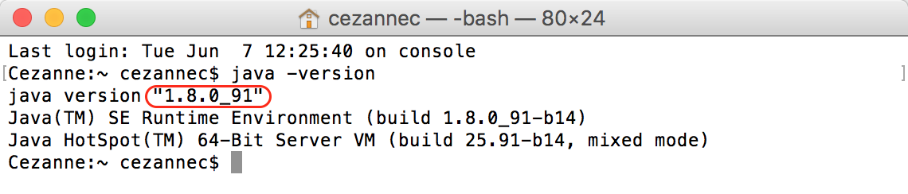
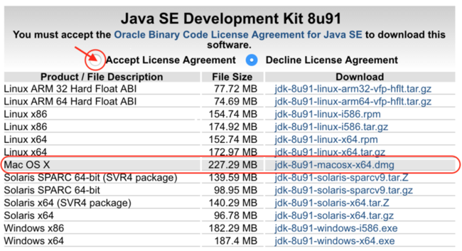

03. Mac: Install Java Development Kit
Install the Java Development Kit (Mac instructions)
Click here for instructions for Windows
1. Verify That You Have Java
First, check if you have the Java Developer Kit, version 8 or greater already installed. To check if you have JDK installed (and which version), open a terminal window and type: java -version and hit enter.
(If you’re not sure how to open a terminal window or what version of Java you have, don’t worry, we’ll go over this in the next video!)
The example below shows Java version 1.8.0_91 -- the version number comes after the “1.”

If you have Java 8 or greater, you computer is set up!
If the JDK is not available, or the version is lower than 8, go on to Step 2 below.
2. Download the Java Development Kit
Download the Java Development Kit, aka, the JDK, from this page.
Oracle, the company that maintains Java, has a lot of options and acronyms. We're looking for the standard edition (SE) JDK. This is the kit you need to start developing your apps with Java.
As of June 2016, the download icon for the JDK looked like this:
After you click the download link, you'll see a list of options for download. Go to the Java SE Development Kit menu of options. Do not go to the demos and samples (the menus look very similar, so make sure to read the heading at the top).
3. Install JDK
This download page has options listed for Mac and Windows and other platforms, and we’re interested in the one Mac option. Download the Mac OS X version (highlighted below).
Note: JDK 8u91 and 8u92 are both okay to download, the important part is that they are both Java version 8.

Before you can download this, you’ll need to click that you accept the license agreement, then you can click the link to download it.
Once you've downloaded it, double click it to install.
4. Verify That You Have Java
Go back to Step 1 and confirm that you have Java version 8 or higher installed. IntelliJ needs a JDK in order to work, so make sure you have this installed before proceeding.
If you can't get the download to work, look for error messages, and try googling to find a solution.